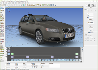

Remograph, today announced the release of Remo 3D v2.7. Remo 3D is an OSG-based tool for creating and modifying 3D models intended for realtime visualization. The primary file format is OpenFlight®. Remo 3D is currently available for Microsoft® Windows® 10/8/7 and Linux.
This new version 2.7 of Remo 3D brings a greatly improved tool for modifying a texture UV mapping, support for new OpenSceneGraph 3.5.9 and other various fixes. The full list of new features and improvements can be found in the release notes on our website: www.remograph.com
About Remograph:
Remograph provides products and services for the 3D modeling, computer graphics and visual simulation industries. The company develops advanced and cost-effective solutions for end-users and developers of e.g. visual simulation systems, visual databases or virtual reality applications. Remograph is situated in Linköping, Sweden.
All trademarks referenced are properties of their respective owners.